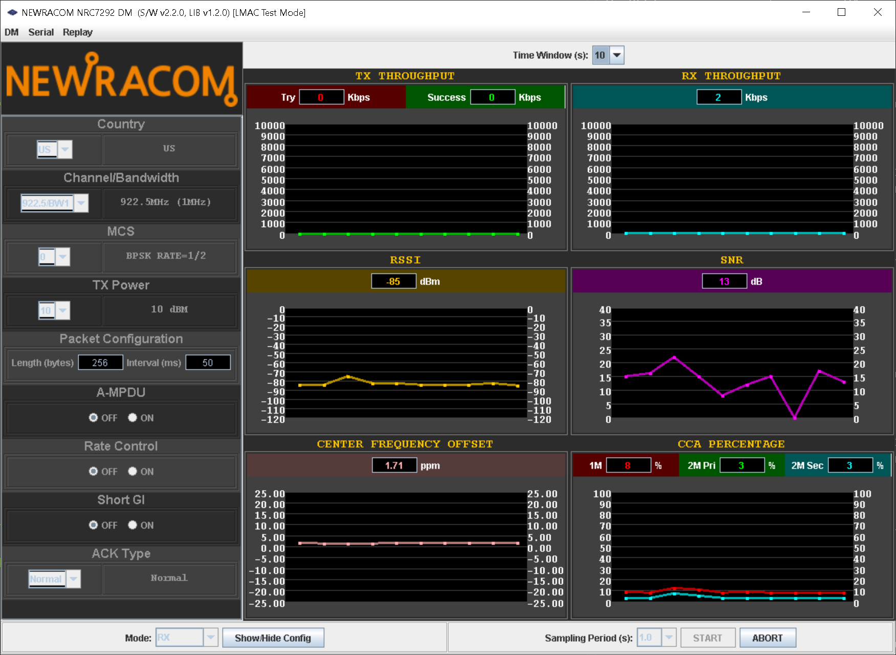

Tool Usage (DM)
Overview
- DM (Diagnostic Monitor) is a GUI tool for monitoring module statistics (TRX throughput, RSSI, SNR, etc) and controlling NRC7292 modules at LMAC level.
- 
Tool Version
v2.3
Setup
- The program supports two modes:
Host/Standalone Mode is used to passively monitor module statistics during host/standalone operation.
LMAC Test Mode is used to control and monitor modules at LMAC level. For LMAC test mode, see Common RAM Mode Tool Setup Instructions.

Operation Types
- The program supports four types of operation:
- TX (LMAC Test Mode Only):
Passive monitoring with transmission parameter configuration.
- RX (LMAC Test Mode Only)
Passive monitoring with reception parameter configuration.
- MONITOR
Passive monitoring without configuration.
NOISE (LMAC Test Mode Only)
In addition, the program features a REPLAY functionality, which can be accessed via the menu bar.
Configurable Parameters
- COUNTRY (TX/RX/NOISE):
is used to select the operating country code.
- Channel & BW & MCS (TX/RX):
is used to set the operating frequency, bandwidth and MCS index. The MCS parameter does nothing for RX mode and is purely for logging purpose only.
- TX Power (TX):
is used to set the TX power level.
- Packet Length/Interval:
is used to configure the packet length and the inter-packet interval.
- A-MPDU:
is used to toggle A-MPDU usage option.
- Rate Control:
is used to toggle Rate Control usage option. If toggled on, the MCS index will dynamically change during operation.
- Short GI:
is used to toggle Short Guard Interval (SGI) usage. If turned off, the guard interval type defaults to Long Guard Interval (LGI).
- Ack Type (TX):
is used to set the ACK type. Available options are NONE, NDP and NORMAL.